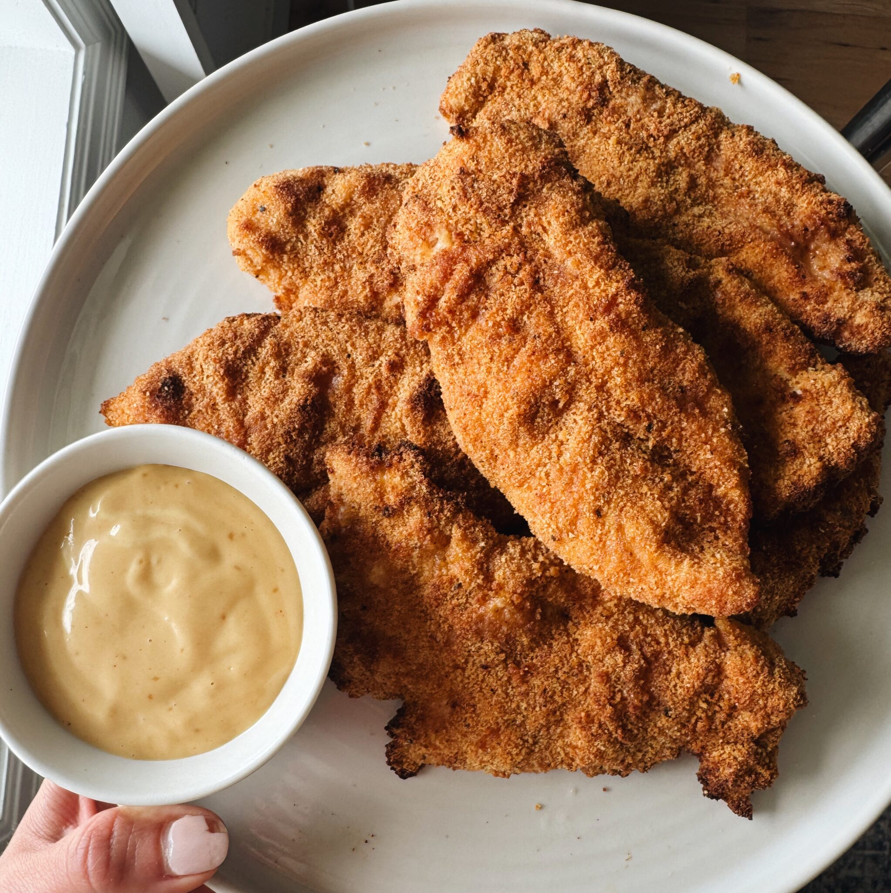

Golden, crispy, and full of flavor — these air fryer chicken tenders are a family favorite ready in just 25 minutes!
Oven Directions: Bake at 400°F for 10 minutes, then broil for 1–2 minutes for extra browning. Using a wire rack helps airflow and prevents sticking.
Seasonings: If you don’t have mixes, use 1½ teaspoons salt and black pepper in both flour and breadcrumb mixtures.
Hot Sauce: Adds flavor, not heat — kid-approved!
Breadcrumbs Tip: Trader Joe’s breadcrumbs give a chunkier, perfect texture. Mixing them with Progresso plain works great too!